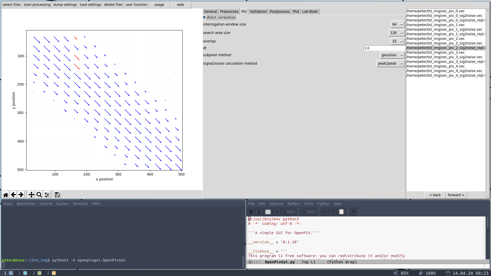

OpenPivGui Documentation¶
OpenPivGui is a graphical user interface, providing an efficient workflow for evaluating and postprocessing particle image velocimetry (PIV) images. OpenPivGui relies on the Python libraries provided by the OpenPIV project.

OpenPivGui.¶